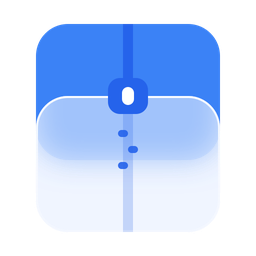

Plain Zipper꼭 필요한 것만 담은 Windows용 압축 프로그램
Plain Zipper는 압축 파일을 열고, 풀고, 만드는 일을 가볍고 깔끔하게 할 수 있는 Windows용 압축 프로그램입니다. 탐색기에서 오른쪽 클릭 한 번으로 풀거나 압축할 수 있고, ZIP·7z는 물론 RAR, 그리고 국내에서 많이 쓰이는 ALZ·EGG 파일도 풀 수 있습니다. 복잡한 설정 없이 바로 쓸 수 있도록 꼭 필요한 기능만 담았습니다.
Plain Zipper는 Microsoft Store에서 다운로드할 수 있습니다.
Microsoft Store 광고 없음 Windows
A simple file archiver for Windows with just what you need
Plain Zipper is a lightweight and clean file compression app for Windows that lets you open, extract, and create archives. You can extract or compress with a single right-click in File Explorer, and it opens not only ZIP and 7z but also RAR and the ALZ and EGG formats widely used in Korea. It includes only the features you really need, so you can use it right away without complicated settings.
Plain Zipper is available from the Microsoft Store.
Microsoft Store No Ads Windows